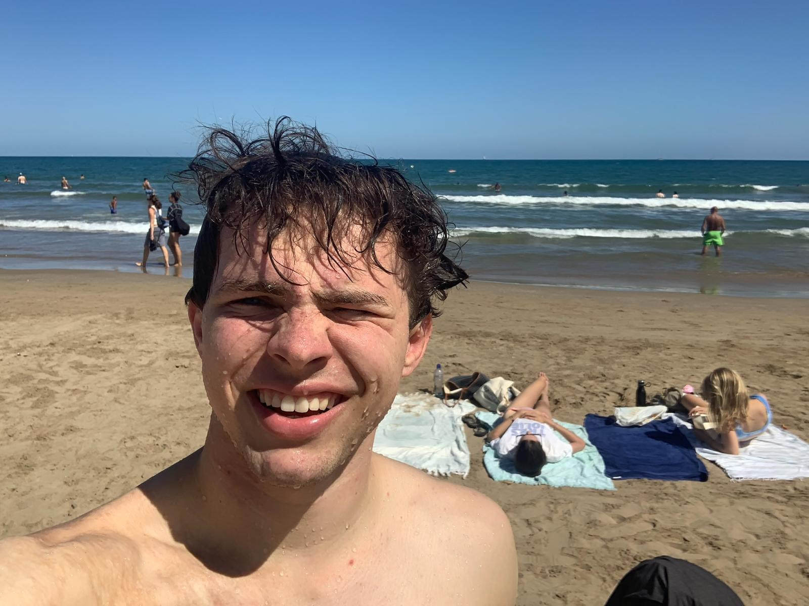
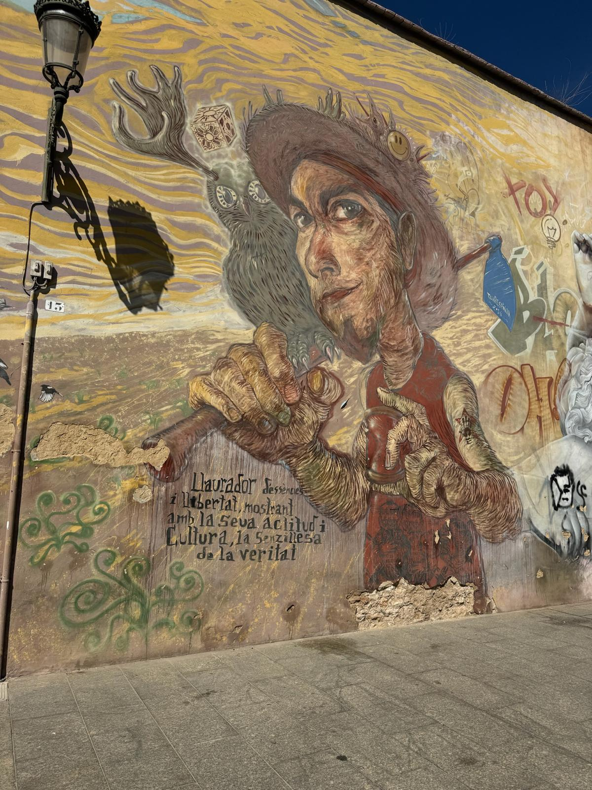
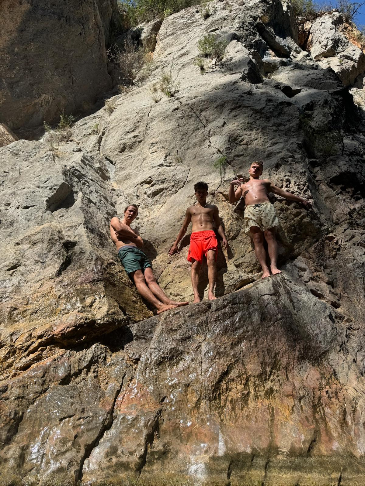

Hello, Sun!
The sun has welcomed us very well. We went on a bike ride on the first day, exploring the city a bit. In the evening we went clubbing to a three-dance-floors-on-two-storeys club. It was very fun. Only finding a taxi after was hard.
 Me on the beach.
The next day the sea called us and we answered. We spent an afternoon tanning in the sun and letting the waves calm our mind.
After a Street Art Tour on Monday we went to the beach again and I built a sand castle. The coast guard was looking for someone on the shore. In the evening we went to a Morrocan restaurant, where we ate delicious Couscous and Tajin.
 A mural that looks like Matteo.
Today we went to Montanejos. The water there supposedly comes from warm springs out of the mountain. Nevertheless, it was very cold. We found a spot where we could climb onto the rock and jump down.
 My friends.